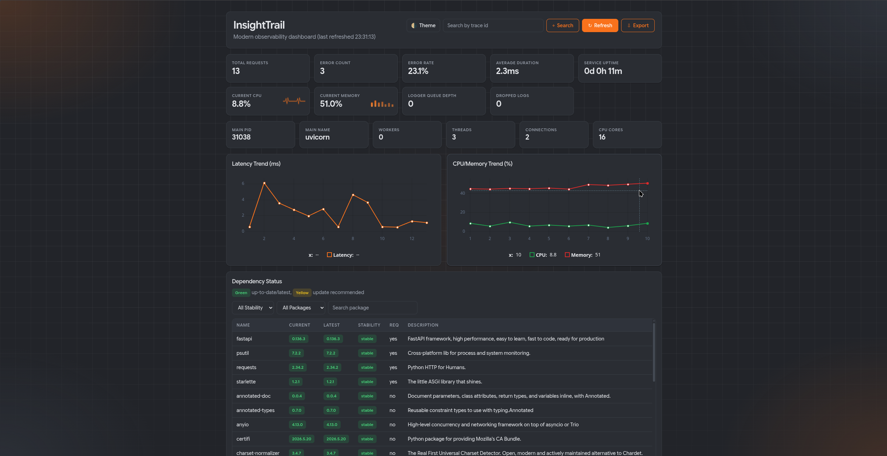

InsightTrail
Lightweight observability for Python web services.
Request tracing, structured JSON logs, real-time metrics, and a live dashboard — one import away.
Everything you need, nothing you don't
Drop-in observability that stays out of your way.
Request Tracing
Every request gets a unique trace_id — correlate logs across your entire request lifecycle.
Structured JSON Logs
Machine-readable logs with automatic rotation. Ship them to your log aggregator of choice.
Real-time Metrics
Request rates, latency, error rates, process memory, CPU — all tracked with zero configuration.
Live Dashboard
A built-in UI at /insight with logs, trend charts, and dependency status — no external services needed.
Dependency Tracker
See installed packages vs. latest PyPI versions with stability labels and stale-detection badges.
Excel Reports
Export filtered request logs, errors, and dependency data to .xlsx with preset or custom date ranges.
Quick Start
Install, import, done.
# install
$ pip install "insighttrail[flask]"
# app.py
from flask import Flask
from insighttrail import FlaskInsightTrail
app = Flask(__name__)
FlaskInsightTrail(app)
@app.route('/')
def home():
return 'Hello from host app'# install
$ pip install "insighttrail[fastapi]"
# main.py
from fastapi import FastAPI
from insighttrail import FlaskInsightTrail
app = FastAPI()
FlaskInsightTrail(app)
@app.get('/')
def home():
return {'message': 'Hello from host app'}
Open http://localhost:8000/insight/ — your dashboard is live.
Built-in Dashboard
Real-time observability without leaving your app.

Configuration
Sensible defaults, full control when you need it.
| Parameter | Default | Description |
|---|---|---|
| url_prefix | '/insight' | Dashboard and API route prefix |
| log_level | 'INFO' | Logging level (DEBUG, INFO, etc.) |
| capture_runtime | False | Include runtime info in logs |
| capture_system_metrics | False | Include per-request system metrics |
| async_logging | True | Non-blocking queue-based log writes |
| success_log_sample_rate | 1.0 | Sampling rate for successful requests |
| slow_request_threshold_ms | None | Always log requests slower than this |
| ultra_light_mode | False | Disables heavy features (charts, network checks) |
| enable_excel_reports | True | Enable Excel report export |